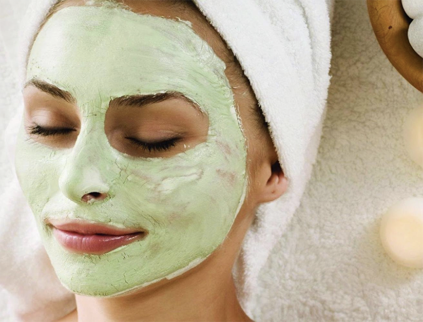

Способы применения голубой глины и рапы озерах
На популярных озерах, где обычно бывает много желающих проводить самолечение, придется отойти от берега на сотни метров, чтобы найти настоящую лечебную грязь. К счастью, озера не глубокие, редко глубже одного метра даже в самом центре. Для сбора лечебного состава лучше всего с собой в воду брать емкость (часто используют просто обрезанную пластиковую бутылку, сможете найти их немало на берегах), и в нее складывать «добычу». Сами процедуры следует проводить на берегу, а не в воде. Набирать и увозить грязь домой большого смысла нет, так как она быстро теряет свои свойства. И еще, берите с собой на самолечение пресную воду, чтобы потом смыть рапу и высохшую соль.
- Не рекомендуют наносить более чемна 20 мин/день.
- Прием грязевых ванн рекомендуется утром с 11 утра и после 15 часов, а так же через час после приема пиши.
- Не рекомендуется применение на голодный желудок.
На популярных озерах, где обычно бывает много желающих проводить самолечение, придется отойти от берега на сотни метров, чтобы найти настоящую лечебную грязь. К счастью, озера не глубокие, редко глубже одного метра даже в самом центре.
Набирать и увозить грязь домой большого смысла нет, так как она быстро теряет свои свойства. И еще, берите с собой на самолечение пресную воду, чтобы потом смыть рапу и высохшую соль.
- Для сбора лечебного состава лучше всего с собой в воду брать емкость
- Часто используют просто обрезанную пластиковую бутылку, сможете найти их немало на
- Сами процедуры следует проводить на берегу
На берегу намажьте суставы, больные места, раны слоем грязи.
Не нужно накладывать очень толстый слой, тонкий при самолечении будет безопаснее. Далее нужно выждать некоторое время, после чего смыть соленой водой, и промыть пресной. Не нужно ждать, пока грязь полностью высохнет, это не верный подход. В жаркую солнечную погоду можно даже накрывать участок полиэтиленовой пленкой, чтобы грязь не высыхала моментально. Что важно, для разных видов грязей нужно соблюдать максимальное время лечения, после чего удалять ее. Подробнее про лечение каждым видом ниже. Также лечебные грязи используют для внутреннего лечения (вагинально и ректально), но мы крайне не рекомендуемся проводить самостоятельно подобное лечение.
И еще раз напомним, что грязи нельзя использовать при онкологических заболеваниях, активном туберкулезе, аритмии, беременности, бронхиальная астме, гипертонии, сахарном диабете, стенокардии, циррозе печени, кровоточащих ранах.
После применения голубой глины или рапы озер, рекомендуется смывать пресной водой, после желательно отдохнуть лежа в течении 1:30 для максимального эффекта на кожу и организм человека. Важно следить за своим состоянием и ни при каких малейших ухудшением самочувствия не продолжать процедуры.
На берегу намажьте суставы, больные места, раны слоем грязи.
Не нужно накладывать очень толстый слой, тонкий при самолечении будет безопаснее. Далее нужно выждать некоторое время, после чего смыть соленой водой, и промыть пресной. Не нужно ждать, пока грязь полностью высохнет, это не верный подход. В жаркую солнечную погоду можно даже накрывать участок полиэтиленовой пленкой, чтобы грязь не высыхала моментально. Что важно, для разных видов грязей нужно соблюдать максимальное время лечения, после чего удалять ее. Подробнее про лечение каждым видом ниже. Также лечебные грязи используют для внутреннего лечения (вагинально и ректально), но мы крайне не рекомендуемся проводить самостоятельно подобное лечение.
И еще раз напомним, что грязи нельзя использовать при онкологических заболеваниях, активном туберкулезе, аритмии, беременности, бронхиальная астме, гипертонии, сахарном диабете, стенокардии, циррозе печени, кровоточащих ранах.
